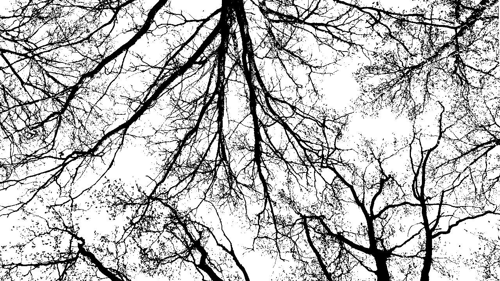

Audio-Visual In/Out
The space of projects, learning, reflection, and resonances (inspiration). Developed since 2025, inspired by XXIIVV.
The structure and visual image of AVIO (at the moment) – wood::
- crown : completed projects
- branches : independent artifacts
- trunk : workshop of programs: library of unknowledge
- roots : the works of other authors that resonate within

Formally, AVIO can be called a MEMEX: "a living document and archive of where a person has been, as well as a tool that suggests where one could go" >
Сonsider a future device, a sort of mechanized private library in which an individual stores all his books, records, and communications, and which may be consulted with exceeding speed and flexibility. It is an enlarged intimate supplement to his memoryVannevar Bush

Contacts
- e-mail : aavviioo@proton.me
- telegram : @bashfr